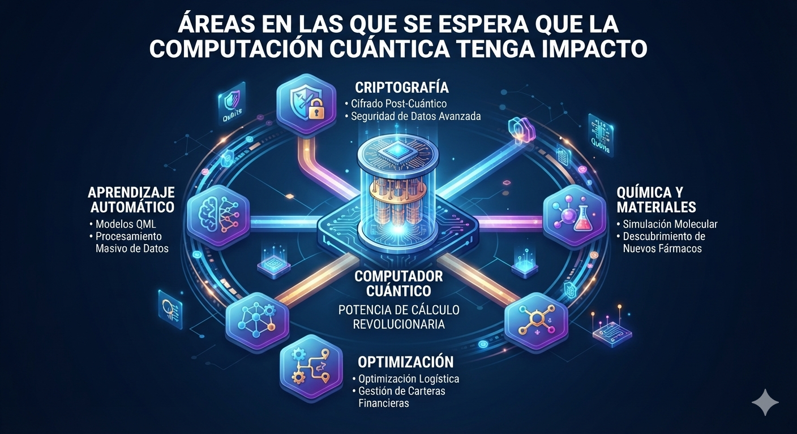

¿Por qué se habla de aplicaciones "potenciales"?
Hoy no existe un computador cuántico que resuelva un problema de utilidad práctica mejor que los mejores métodos clásicos. Lo que hay son demostraciones científicas y pruebas de concepto, como las descritas en la página de avances recientes. Por eso las aplicaciones se consideran potenciales.
Las más prometedoras son aquellas en las que se conoce una razón teórica para esperar ventaja: la simulación de sistemas cuánticos, idea propuesta por Richard Feynman en 1981, y algunos algoritmos como el de Shor o el de Grover, explicados en los principios generales.
- El problema debe tener una estructura que un algoritmo cuántico pueda aprovechar.
- Debe existir un algoritmo con ventaja demostrada frente a los métodos clásicos.
- El hardware debe tener suficientes cúbits lógicos y tasas de error bajas.
- La comparación debe hacerse contra el mejor método clásico disponible, no contra uno ingenuo.
Áreas con mayor potencial
| Área | Qué podría aportar | Estado actual |
|---|---|---|
| Química y materiales | Simular moléculas y materiales con precisión, útil para baterías, catalizadores y medicamentos. | Pruebas de concepto: en 2025 Google estudió dos moléculas con Quantum Echoes y comparó con datos de resonancia magnética nuclear. |
| Criptografía | Romper cifrados como RSA mediante el algoritmo de Shor y, a la vez, motivar nuevos sistemas de protección. | Ninguna máquina actual puede hacerlo; las estimaciones recientes hablan de alrededor de un millón de cúbits físicos. |
| Optimización y finanzas | Mejorar rutas, horarios logísticos o composición de portafolios. | Se exploran pilotos, pero no hay ventaja demostrada frente a los mejores métodos clásicos. |
| Aprendizaje automático | Acelerar ciertas tareas de análisis de datos. | Investigación temprana; muchos resultados teóricos dependen de supuestos difíciles de cumplir. |
Criptografía: una amenaza que ya se atiende
El algoritmo de Shor permitiría, con una máquina suficientemente grande, descifrar los sistemas de clave pública que hoy protegen la banca en línea y las comunicaciones. Como existe el riesgo de que alguien almacene datos cifrados hoy para descifrarlos en el futuro, la respuesta ya empezó: en agosto de 2024 el NIST publicó tres estándares de criptografía poscuántica (FIPS 203, 204 y 205), diseñados para resistir ataques de computadores cuánticos.
- Hacer un inventario de dónde se usa cifrado de clave pública.
- Priorizar los datos que deben mantenerse secretos durante muchos años.
- Planear la migración hacia algoritmos poscuánticos estandarizados.
Qué se puede esperar
Lo más probable es que los computadores cuánticos sean aceleradores especializados, conectados a computadores clásicos y ofrecidos como servicio en la nube, y no equipos de uso personal. Su impacto dependerá de que los avances en corrección de errores descritos en la página de avances recientes permitan ejecutar algoritmos largos y confiables.
